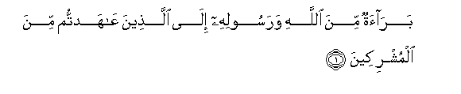
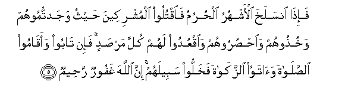

Sacred Texts Islam Index
Hypertext Qur'an Unicode Palmer Pickthall Yusuf Ali English Rodwell
Sūra IX.: Tauba (Repentance) or Barāat (Immunity). Index
Previous Next

The Holy Quran, tr. by Yusuf Ali, [1934], at sacred-texts.com
Sūra IX.: Tauba (Repentance) or Barāat (Immunity).
Section 1

1. Baraatun mina Allahi warasoolihi ila allatheena AAahadtum mina almushrikeena
1. A (declaration) of immunity
From God and His Apostle,
To those of the Pagans
With whom ye have contracted
Mutual alliances:—
2. Faseehoo fee al-ardi arbaAAata ashhurin waiAAlamoo annakum ghayru muAAjizee Allahi waanna Allaha mukhzee alkafireena
2. Go ye, then, for four months,
Backwards and forwards,
(As ye will), throughout the land,
But know ye that ye cannot
Frustrate God (lay your falsehood)
But that God will cover
With shame those who reject Him.
3. Waathanun mina Allahi warasoolihi ila alnnasi yawma alhajji al-akbari anna Allaha baree-on mina almushrikeena warasooluhu fa-in tubtum fahuwa khayrun lakum wa-in tawallaytum faiAAlamoo annakum ghayru muAAjizee Allahi wabashshiri allatheena kafaroo biAAathabin aleemin
3. And an announcement from God
And His Apostle, to the people
(Assembled) on the day
Of the Great Pilgrimage,—
That God and His Apostle
Dissolve (treaty) obligations
With the Pagans.
If, then, ye repent,
It were best for you;
But if ye turn away,
Know ye that ye cannot
Frustrate God. And proclaim
A grievous penalty to those
Who reject Faith.
4. Illa allatheena AAahadtum mina almushrikeena thumma lam yanqusookum shay-an walam yuthahiroo AAalaykum ahadan faatimmoo ilayhim AAahdahum ila muddatihim inna Allaha yuhibbu almuttaqeena
4. (But the treaties are)not dissolved
With those Pagans with whom
Ye have entered into alliance
And who have not subsequently
Failed you in aught,
Nor aided any one against you.
So fulfil your engagements
With them to the end
Of their term: for God
Loveth the righteous.

5. Fa-itha insalakha al-ashhuru alhurumu faoqtuloo almushrikeena haythu wajadtumoohum wakhuthoohum waohsuroohum waoqAAudoo lahum kulla marsadin fa-in taboo waaqamoo alssalata waatawoo alzzakata fakhalloo sabeelahum inna Allaha ghafoorun raheemun
5. But when the forbidden months
Are past, then fight and slay
The Pagans wherever ye find them,
And seize them, beleaguer them,
And lie in wait for them
In every stratagem (of war);
But if they repent,
And establish regular prayers
And practise regular charity,
Then open the way for them:
For God is Oft-forgiving,
Most Merciful.
6. Wa-in ahadun mina almushrikeena istajaraka faajirhu hatta yasmaAAa kalama Allahi thumma ablighhu ma/manahu thalika bi-annahum qawmun la yaAAlamoona
6. If one amongst the Pagans
Ask thee for asylum,
Grant it to him,
So that he may hear the Word
Of God; and then escort him
To where he can be secure.
That is because they are
Men without knowledge.